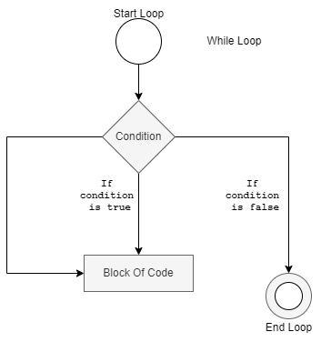

-
Introduction for Javascript :- javascript ये Language एक client-side Language है जिसका इस्तेमाल HTML(HyperText Markup Language) के साथ किया जाता है | Javascript ये Language lighted Language है |
Javascript Language का invented 'Brendan Eich' ने 1995 में किया | ये langauge 'Java' Programming Language से प्रेरित है | Javascript का पहला नाम 'Marc Andreessen' ने 'Mocha' रखा था | 'Marc Andreessen' ये Netscape के Founder है और उसी year में उसका नाम 'Livescript' रखा गया और बाद में December 1995 ने Sun Microsystem द्वारा उसका नाम 'Javascript' रखा गया |
Javascript Language का इस्तेमाल Web-Development के लिए HTML के साथ किया जाता है | HTML के बिना Javascript का इस्तेमाल नहीं किया जा सकता | Javascript का code एक normal web browser पर run किया जा सकता है | Javascript का code Run करने के लिए Web Browser का Javascript Enable करना पड़ता है | कुछ Browsers में Javascript पहले से ही enabled होता है | -
Syntax:-Javascript का code < scriptt> और < /scriptt> इन HTML tags के बीच में लिखा जाता है और ये दोनों tags tags के बीच में लिखे जाते है | लेकिन जरुरी नहीं है कि 'script tags' को 'head tags' के बीच में लिखे Javascript का code Web Page पर कहा पर implement किया जा सकता है |
Javascript का code implement करने के लिए script tag में ordinarily 'type' नाम का एक ही attribute इस्तेमाल किया जाता है | यहाँ पर दिया हुआ content कौन से type का है वो दिया जाता है |
Source code:-
< scriptt type="text/javascript">
///some javascript statements;
< /scriptt>
Javascript के लिए सिर्फ < scriptt> का इस्तेमाल किया जाता है तब भी Javascript का code सामान्य तरीके से execute हो पाता है | -
Javascript Hello World Program :-Javascript में string को Browser पर display करने के लिए 'document.write' का इस्तेमाल किया जाता है |
Source code:-
< scriptt type="text/javascript">
document.write("Hello World!");
< /scriptt> - HTML Tags in document.write:-Javascript में document.write में as a string HTML Tags भी इस्तेमाल किये जाते है|
- Not Required semi-colon on seperate lines:-जब seperate lines पर variables और statements होते है तब semi-colon की जरुरत नहीं पडती |
- Use comma or semi-colon for inline variables and statements:-जब inline variables और statements लिखे जाते है उन्हें seperate करने के लिए comma(,) या semi-colon(;) का इस्तेमाल किया जाता है |
-
External Javascript:-HTML script में एक Javascript file को दुसरे HTML script में import किया जाता है | ये Javascript file .js इस extension से save की जाती है |
External Javascript से HTML page को गति प्रदान करता है | एक javascript file को multiple HTML pages में भी इस्तेमाल किये जाते है |
External Javascript के लिए < scriptt> पर 'src' नाम का attribut इस्तेमाल किया जाता है |
जैसे कि, < scriptt type="text/javascript" src="external_js.js">< /script>
Example for External Javascript:-External Javascript में script tag की कोई जरुरत नहीं होती | अगर लगाया जाये तो भी कोई दिक्कत नहीं होती | external_js.js और Hello.html ये दोनों files एक ही path या location पर है |
External Javascript में 'src' पर 'js' file का पूरा path भी दिया जाता है |
external_js.js -
Comments:-Javascript में Comment non-executable होता है | कुछ Javascript code में additional information, documentation के लिए Comment का इस्तेमाल किया जाता है |
Javascript में comments की lines Browser में Javascript द्वारा ignore की जाती है | Javascript के code का execution भी comment से बंद किया जाता है |
Javascript में दो प्रकार से Comments दी जाती है |
Single Line Commentके लिए //(double slashes) का इस्तेमाल किया जाता है |
Multiline Comment के लिए /* -----*/ के बीच में comments लिखी जाती है | -
variables:-Javascript Variables में information को एक जगह पर store किया जाता है | Variable पर कौन से भी data types की value store की जाती है |
Rules for Creating Variables
Variables को declare करने के लिए 'var' keyword का use किया जाता है |
Variables के नाम की starting किसी भी letter(A-Z a-z) से, underscore(_) से या dollar($) sign से की जाती है |
Variables की starting Numeric से नहीं हो सकती | लेकिन Variable alphanumeric हो सकता है | For eg. A1 = 5
Variables Javascript का कोई keyword नहीं हो सकता |
Variables case-sensitive होते है | 'A' और 'a' ये दोनों अलग-अलग variables है |
Variables के दो प्रकार होते है |
Local Variables सिर्फ Function के अन्दर ही visible होते है |
Global Variables Function के बाहर कहा भी access किये जाते है |
-
Data Type:-
Variables पर अलग-अलग values store करने के लिए data types का इस्तेमाल किया जाता है | Data Types में main two type होते है |
Primitive Data Types
Object Data Types
Primitive Data TypesPrimitive Data Types के चार प्रकार होते है |- String:-String ये एक characters का sequence होता है | String को double("") या single('') quotes में लिखा जाता है |
- Number:-Javascript में सिर्फ एक ही Number Data type होता है | Number पर integer values और floating-point values होती है |
- Boolean:-Boolean 'true' और 'false' ये दो values होती है |
- Undefined :-Variable जब declare या initialize नहीं किया जाता तो वो 'undefined' data type होता है |
- Null:-Null मतलब variable पर कोई value नहीं होती | Null; Undefined के बराबर होता है
- Array:-Array ये एक same data type का collection होता है | Array की values ([]) में दी जाती है | हर array की value comma(,) से seperate की जाती है |
- Function:-function को create करने के लिए 'fuction' keyword का इस्तेमाल किया जाता है | Function ये Statements का एक block होता है |
- Object:-Object में methods और कुछ properties होती है |
-
Arithmetic Operators:-Operand पर Arithmetic operations करने के लिए Arithmetic Operators इस्तेमाल किये जाते है |
Operators description Example + Operands को add करने के लिए Addition Arithmetic Operator का इस्तेमाल किया जाता है | if a = 6, b = 3,
a + b = 9- Operands को subtract करने के लिए Subtraction Arithmetic Operator का इस्तेमाल किया जाता है | if a = 6, b = 3,
a - b = 3* Operands को multiply करने के लिए Multiplication Arithmetic Operator का इस्तेमाल किया जाता है | if a = 6, b = 3,
a * b = 18/ Operands को divide करने के लिए Division Arithmetic Operator का इस्तेमाल किया जाता है | if a = 6, b = 3,
a / b = 2% दो Operands से remainder निकालने के लिए Modulus Arithmetic Operator का इस्तेमाल किया जाता है | if a = 6, b = 3,
a % b = 0++ Operand को एक से बढ़ाने के लिए Increment Arithmetic Operator का इस्तेमाल किया जाता है | if a = 6,
a++ = 6
++a = 7-- Operand को एक से घटने के लिए Decrement Arithmetic Operator का इस्तेमाल किया जाता है | if a = 6,
a-- = 6
--a = 5 -
Comparison Operators:-Comparison Operators दो operands की condition boolean value में return करता है |
Operators description Example == Equal to Comparison Operator; operands equal है या नहीं ये check करता है | if a = 6, b = "6"
return true=== Identical Equal to Comparison Operator; operands के data types और उनकी values को check करता है | if a = 6, b = "6"
return false< Less than Comparison Operator; ये left operand; right operand से छोटा है या नहीं ये check करता है | if a = 6, b = 5
a < b
return false<= Less than or Equal to Comparison Operator; ये left operand; right operand से छोटा या बराबर है या नहीं ये check करता है || if a = 6, b = 5
a < = b
return false> Greater than Comparison Operator; ये left operand; right operand से बड़ा है या नहीं ये check करता है | if a = 6, b = 5
a > b
return true>= Greater than or Equal to Comparison Operator; ये left operand; right operand से बड़ा या बराबर है या नहीं ये check करता है | if a = 6, b = 5
a >= b
return true!= Not Equal to Comparison Operator; operands equal है या नहीं ये check करता है | if a = 6, b = "6"
a != b
return false!== Identical Not Equal to Comparison Operator; operands का data types और उनकी values equal है या नहीं ये check करता है | if a = 6, b = "6"
a !== b
return true -
Assignment Operators:-
Operators description Example Same as = Assignment a = b a = b += Addition Assignment a += b a = a + b -= Subtraction Assignment a -= b a = a - b *= Multiplication Assignment a *= b a = a * b /= Division Assignment a /= b a = a / b %= Modulus Assignment a %= b a = a % b &= Bitwise AND Assignment a &= b a = a & b |= Bitwise OR Assignment a |= b a = a | b ^= Bitwise Exclusive OR Assignment a ^= b a = a ^ b <<= Left Shift Assignment a <<= b a = a << b >>= Right Shift Assignment a >>= b a = a >> b -
Logical Operators:-
Operators description && जब दिए हुए सभी expression 'true' होते है तो ये 'true' return करता है | अगर हुए expressions से एक expression अगर false हुई तो ये false return करता है | || Expressions में से एक expression अगर 'true' होता है तो ये 'true' return करता है | ! Logical NOT Operator जब expression false होता है तब 'true' return करता है और अगर expression true होता है तो 'false' return करता है | -
Bitwise Operators:- Bitwise Operators; binary numbers पर काम करते है |
Operators description & Bitwise AND | Bitwise OR = Bitwise Exclusive OR(XOR) ~ ये Operator सारे bit reverse करता है |
ये Operator 0 को 1 कर देता है और 1 को 0 कर देता है |Bitwise NOT<< Left Shift(<<) for e.g. a=20; /* 0001 0100 */ a << 2 में numeric value के binary value में हर binary number को 2 binary numbers left side से shift करता है | for e.g.a=20; /* 0001 0100 */ तो इसका 0101 0000 मतलब 80 हो जायेगा | >> Right Shift(>>) for e.g. a=20; /* 0001 0100 */ ये Left shift से बिलकुल उलट है | Right Shift a>> 2 में numeric value के binary value में हर binary number को 2 binary numbers right side से shift करता है | for e.g.a=20; /* 0001 0100 */ तो इसका 0000 0101 मतलब 5 हो जायेगा | >>> Bitwise Unsigned Right Shift(>>>) Operator; Signed Right Shift Operator जैसा ही होता है | ये सिर्फ positive value return करता है | -
Conditional(Ternary) Operator :-
- Conditional Operator में तीन Expressions होते है |
- Conditional Operator को Ternary Operator भी कहते है |
- Conditional Operator में अगर पहला expression true होता है, तो वो दूसरा expression output में print करता है |
- अगर Conditional Operator में पहला expression false होता है, तो वो तीसरा expression output में print करता है |
-
Miscellaneous Operators
Types of Miscellaneous Operatorsinstance of Operator :-
instanceof Operator का इस्तेमाल Object का instance check करने के लिए किया जाता है |delete Operator:-
delete Operator से कुछ array, array के elements, object और object की properties को remove किया जाता है |Note :
'var' keyword के साथ पूरा array या object remove नहीं किया जा सकता |
अगर delete नहीं होता तो 'false' return होता है और delete होता है 'true' return होता है |new Operator:-
new Operator से Object का instance create किया जाता है |in Operator:-
Object की property exist है या नहीं ये check करता है अगर होती है ये 'true' return करता है और नहीं होती तो 'false' return करता है |typeof Operator:-
typeof Operator; operand का 'type' string में return करता है |
typeof Operator ये 'types' return करता है |
"number", "object", "function", "string", "boolean", "undefined"
- Loop:-Loop एक specified number तक Statements को execute करता है |
- While Loop:- while Loop जब तक condition true होती है तब तक statements को बार-बार executes करता रहता है और जब condition false हो जाती तब execution stop हो जाता है | 
-
Do_While Loop:-do_while Loop जब तक condition true होती है तब तक statements को बार-बार executes करता रहता है और जब condition false हो जाती तब एक बार statement को execute करता है |